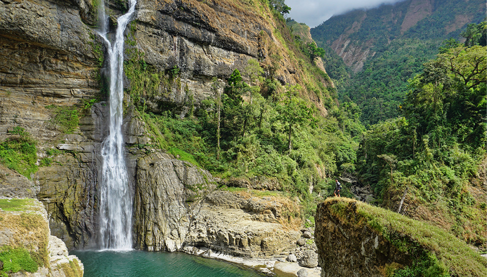
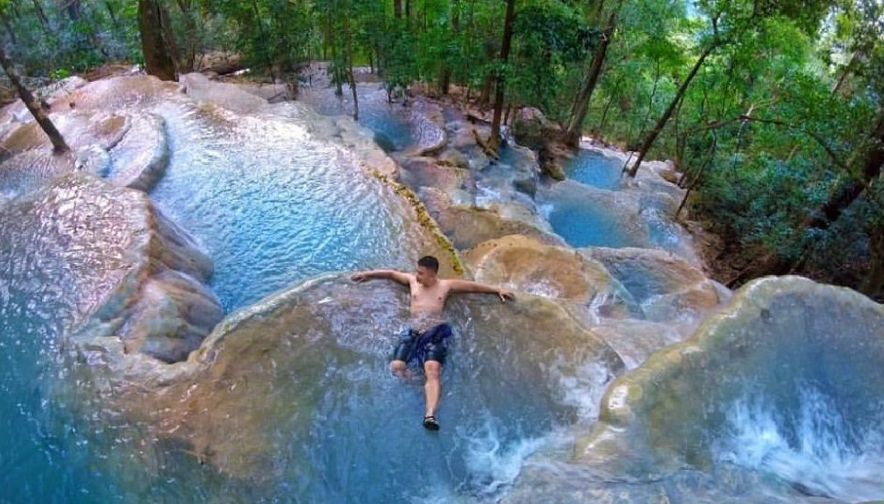
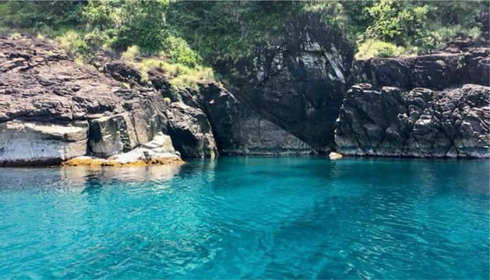

Take a peek of the stunning places in Luzon that only the locals know
Featuring
Luzon
Luzon is the northern island part of the Philippines.
It is the largest and most populous island of the
Philippines
Stunning Places



Favorites
Apayao Road
Region I
This road is a shortcut from Ilocos Norte to Apayao Province. This is a difficult road to travel since it's in a mountain, but because of its wonderful view of Mt. Kilang people are willing to go into the adventure.
This falls is located at Sigay, Ilocos Sur. Its not actually the destination that makes it memorable, its the journey. It is not easy to go there that's why adventurer loves it.
This falls is located at Tineg, Abra. This is a falls is something that you probably never even thought that could exist. What makes this unique is its uneven land forms which creates a beautiful water flow.
This beach can only be seen at Pasaleng, Pagudpud. People loves to visit this place because of its crystal clear water. Visitor can even go to the Makagutugot Cave nearby which is one boat ride away.